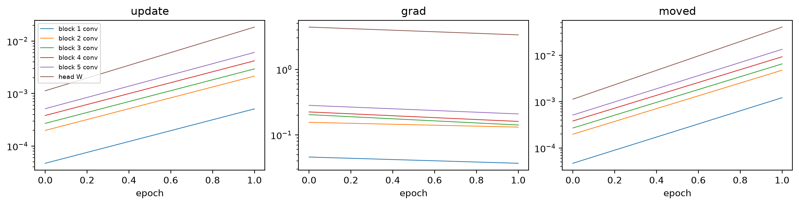
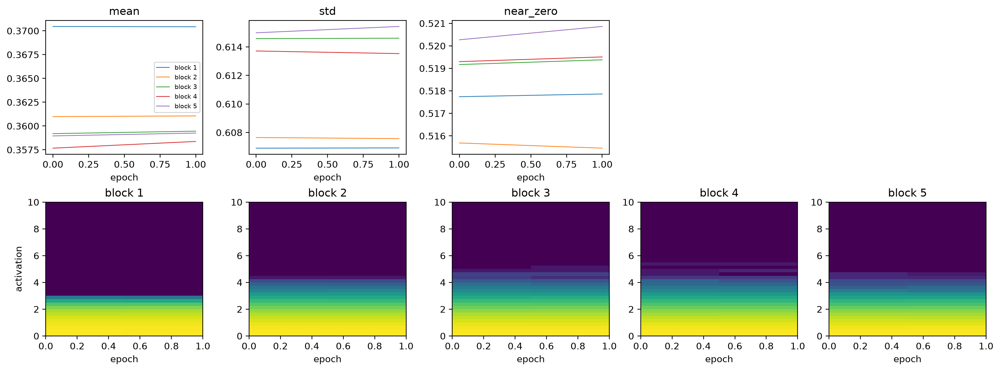
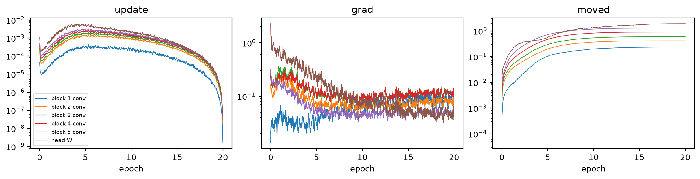
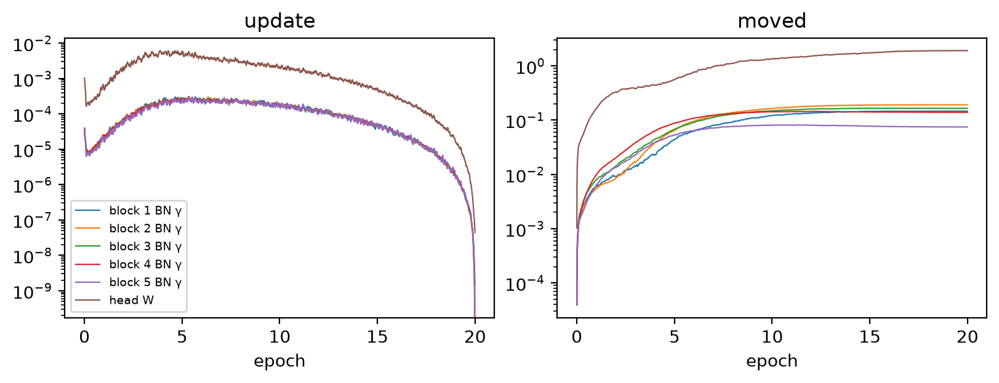
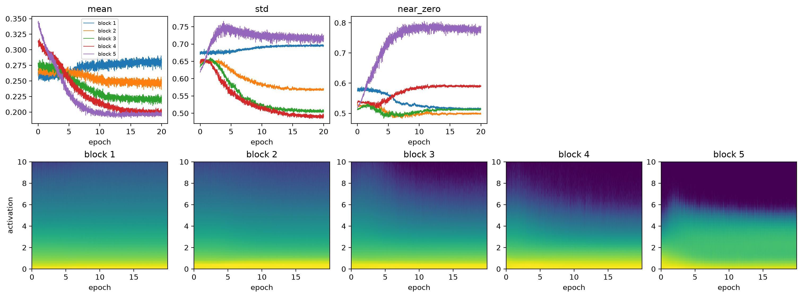
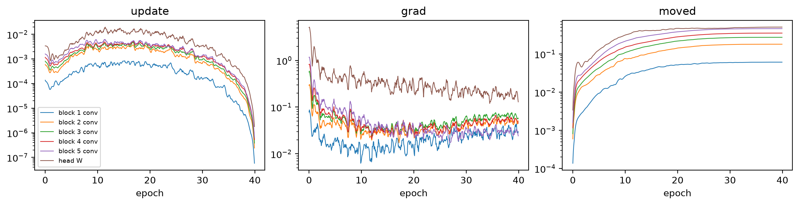
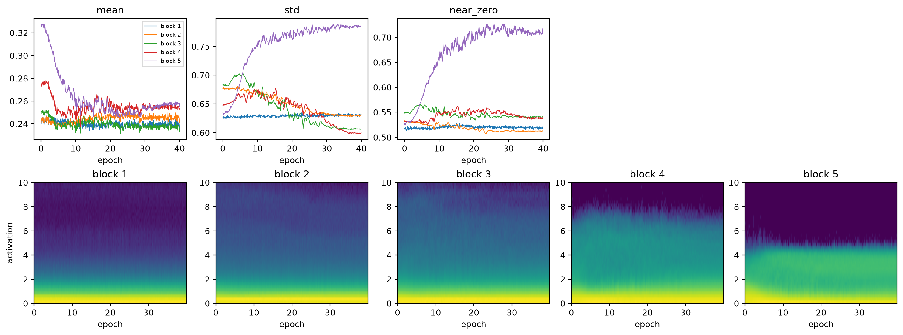
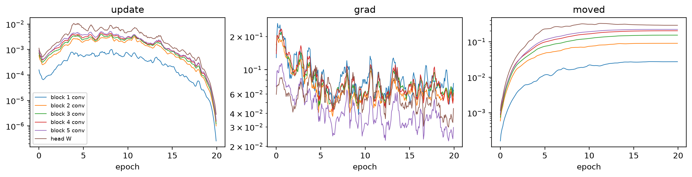
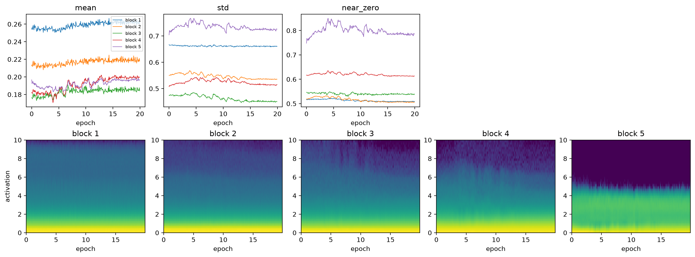

import copy
from fastcore.test import *
from fastai.torch_core import set_seed
from soilspecdata.all import load_ossl
from soilspecdl.all import get_spectral_dls, get_splitter, BatchSNV, SpectralCNN, predict
from ossl_fuku_transfer.data import *
from ossl_fuku_transfer.transfer import *Training dynamics
Record how each layer’s weights, gradients and activations change while the CNN trains: on OSSL, on Fukushima from random weights, and when fine-tuning on Fukushima
The module part uses small random arrays, so it runs without the data. The sections from OSSL pretraining onwards read OSSL and the Fukushima data, and are marked #| fukudata.
Recording
param_label turns a parameter name of SpectralCNN into a short label. Each block has a convolution, then batch norm with scale γ and shift β:
param_label
def param_label(
name:str
)->str: # Such as 'block 1 conv', 'block 1 BN γ' or 'head W'Short label for the parameter name of a SpectralCNN
labels = [param_label(n) for n, _ in SpectralCNN().named_parameters()]
test_eq(labels[:4], ['block 1 conv', 'block 1 BN γ', 'block 1 BN β', 'block 2 conv'])
test_eq(labels[-2:], ['head W', 'head b'])
len(labels)17ParamStats records, every every training steps and for each parameter tensor:
weight: the norm ‖W‖;grad: the norm of the gradient;update: the size of this step relative to the weights, ‖ΔW‖/‖W‖;moved: how far the weights are from where the fit started, ‖W − W₀‖/‖W₀‖.
A relative update near 10⁻³ is a common rule of thumb for a layer that learns at a sensible rate. Much smaller means the layer barely learns, and much larger means it is unstable.
Adam scales each element’s step by the history of its own gradients, so the step per element is similar across layers. The default initialisation sets a layer’s weights to a scale of about 1/√(fan-in), the number of inputs to each unit. So with the same learning rate, ‖ΔW‖/‖W‖ grows with √(fan-in). In SpectralCNN, the fan-in of the 5 convolutions is 3, 48, 96, 192 and 384. A smaller relative update in block 1 is therefore expected, and doesn’t by itself mean that block 1 learns less.
ParamStats
def ParamStats(
every:int=10
):Record the norm, gradient norm, relative update and relative distance from the start of each parameter, every every steps
tracked_fit trains learn with a one-cycle schedule while recording ParamStats and fastai’s ActivationStats. The activations are those of each block’s convolution, batch norm and LeakyReLU, before pooling. ActivationStats gives their mean, standard deviation and near_zero, the share of values ≤ 0.05. After LeakyReLU, those are the units that are switched off. The histograms span 0 to 10 in 40 bins.
With fname, the record is saved in model_dir() and loaded on later calls instead of training again.
tracked_fit
def tracked_fit(
learn, # Learner from `spectral_learner`, with a `SpectralCNN`
epochs, # Number of one-cycle epochs
lr, # Maximum learning rate
every:int=10, # Record every `every` training steps
fname:NoneType=None, # File name for the record, without extension; no file if None
)->dict: # Keys 'params', 'acts', 'history', 'steps_per_epoch' and 'state'Fit learn and record its parameter and activation statistics, or load the record saved under fname
rng = np.random.default_rng(0)
X_syn, y_syn = rng.random((100, len(shared_wns))), rng.random(100)
dls_syn = fuku_dls(X_syn, y_syn, np.arange(100) >= 80)
set_seed(0)
rec_syn = tracked_fit(spectral_learner(dls_syn, SpectralCNN()), 2, 1e-3, every=2)
p, steps = rec_syn['params'], list(range(0, 2 * rec_syn['steps_per_epoch'], 2))
test_eq(p.param.nunique(), 17)
test_eq(sorted(p.step.unique()), steps)
test_eq(rec_syn['acts']['hist'].shape, (len(steps), 5, 40))
p.head()| step | lr | param | weight | grad | update | moved | |
|---|---|---|---|---|---|---|---|
| 0 | 0 | 0.00004 | block 1 conv | 5.867114 | 0.046041 | 0.000047 | 0.000047 |
| 1 | 0 | 0.00004 | block 1 BN γ | 3.999980 | 0.033374 | 0.000040 | 0.000040 |
| 2 | 0 | 0.00004 | block 1 BN β | 0.003983 | 0.031638 | 0.040067 | 0.039900 |
| 3 | 0 | 0.00004 | block 2 conv | 7.797356 | 0.155505 | 0.000199 | 0.000199 |
| 4 | 0 | 0.00004 | block 2 BN γ | 5.656854 | 0.035060 | 0.000040 | 0.000040 |
Plotting
plot_params plots statistics of ParamStats against the epoch, one line per parameter whose label contains kind, plus the head weights. Each line is a rolling mean over smooth records, on a log scale:
plot_params
def plot_params(
rec, # Record from `tracked_fit`
stats:tuple=('update', 'grad', 'moved'), # Columns of `rec['params']` to plot, one panel each
kind:str='conv', # Part of the parameter label to select, such as 'conv' or 'BN γ'
smooth:int=10, # Window of the rolling mean, in records
):Plot stats of each selected parameter over training
plot_params(rec_syn, smooth=1);
plot_acts plots the activation statistics of each block over training. The second row shows each block’s histogram over training, as fastai’s color_dim does: the colour is the log of the count, and the vertical axis spans activations from 0 to 10:
plot_acts
def plot_acts(
rec, # Record from `tracked_fit`
):Plot the mean, standard deviation, share ≤ 0.05 and histogram of each block’s activations over training
plot_acts(rec_syn);
Channel activity
block_acts runs spectra through a model block by block, and yields each block’s activations before pooling. channel_activity gives, for each block of a trained model, the share of spectra and positions at which each channel’s activation is above 0.05. A channel that is almost never above it is dead: it passes almost nothing to the next block. A channel that is almost always above it works as a linear unit, since LeakyReLU then never bends its output.
activity_table
def activity_table(
acts:dict, # Model name, or tuple of names: result of `channel_activity`
lo:float=0.01, # A channel is dead below this share
hi:float=0.99, # A channel is linear above this share
)->pandas.DataFrame:Number of channels per block that are dead, linear, and in total, for each model
channel_activity
def channel_activity(
model, # Trained `SpectralCNN`
X, # Preprocessed spectra, one per row
bs:int=256, # Batch size
)->list: # One array per block, with one share per channelShare of activations above 0.05 for each channel of each block of model, over the spectra in X and all positions
block_acts
def block_acts(
model, # Trained `SpectralCNN`
X, # Preprocessed spectra, one per row
bs:int=256, # Batch size
):Yield, for each batch of X, the activations of each block of model before pooling, applying BatchSNV first as in training
m_syn = SpectralCNN()
m_syn.load_state_dict(rec_syn['state'])
act_syn = channel_activity(m_syn, X_syn)
test_eq([len(c) for c in act_syn], [16, 32, 64, 128, 256])
test_eq(all(((c >= 0) & (c <= 1)).all() for c in act_syn), True)
activity_table({'random data': act_syn})| dead | linear | channels | ||
|---|---|---|---|---|
| random data | 1 | 0 | 0 | 16 |
| 2 | 0 | 0 | 32 | |
| 3 | 1 | 2 | 64 | |
| 4 | 17 | 12 | 128 | |
| 5 | 47 | 33 | 256 |
OSSL pretraining
The data and preprocessing are those of 03_kex: OSSL MIR spectra with log1p(Kex), SNV and a Savitzky-Golay first derivative fitted on OSSL. The Fukushima spectra get the same preprocessing and the Cs137 test split:
om = load_ossl().mir(wmin=shared_wns[0], wmax=shared_wns[-1])
Xo, yo, _ = om.xy('k.ext_usda.a725_cmolc.kg')
yo = np.log1p(yo.ravel())
fuku = load_fuku()
fuku.source = fuku.source.assign(target=fuku.source['soil_ex_K2O'] / mg_k2o_per_cmolc)
Xf, yf, idf = fuku.xy('target')
yf = np.log1p(yf.ravel())
is_test = np.isin(idf, cs137_split()[1])
pipe = preprocessings()['snv_d1']
Xo_d, Xf_d = pipe.fit_transform(Xo), pipe.transform(Xf)
Xo_d.shape, Xf_d.shape((57674, 1675), (1388, 1675))This run repeats pretrain('ossl_kex_snv_d1') with the same split, seed and schedule (20 epochs, learning rate 10⁻³), recording every 10 steps. Training on MPS is not fully deterministic, so its weights differ slightly from the saved pretrained model. The last epoch:
dls_o = get_spectral_dls(Xo_d, yo, shared_wns, splitter=get_splitter(0.9, 0.1, seed=42), batch_tfms=[BatchSNV()])[0]
set_seed(42)
runs = {'OSSL': tracked_fit(spectral_learner(dls_o, SpectralCNN()), 20, 1e-3, fname='dyn_ossl_kex')}
runs['OSSL']['history'].iloc[-1].round(3).to_dict(){'train_loss': 0.027, 'valid_loss': 0.03, 'r2_score': 0.792}plot_params(runs['OSSL']);
plot_params(runs['OSSL'], kind='BN γ', stats=('update', 'moved'));
plot_acts(runs['OSSL']);
Fukushima
Two runs on the Fukushima training samples, with the schedules that cross-validation chose in 03_kex: from random weights (40 epochs, learning rate 3·10⁻³), and fully fine-tuned from the saved pretrained model (20 epochs, 3·10⁻³). Both record every 2 steps. The test scores check that these runs match the comparison in 03_kex:
dls_f = fuku_dls(Xf_d, yf, is_test, seed=0)
set_seed(0)
runs['Fukushima only'] = tracked_fit(spectral_learner(dls_f, SpectralCNN()), 40, 3e-3, every=2, fname='dyn_fuku_kex_scratch')
set_seed(0)
pretrained = load_pretrained('ossl_kex_snv_d1')
runs['fully fine-tuned'] = tracked_fit(spectral_learner(dls_f, copy.deepcopy(pretrained)), 20, 3e-3, every=2, fname='dyn_fuku_kex_ft')
models = {}
for k, r in runs.items():
models[k] = SpectralCNN()
models[k].load_state_dict(r['state'])
pd.DataFrame({k: scores(yf[is_test], predict(models[k], Xf_d[is_test], shared_wns)) for k in ('Fukushima only', 'fully fine-tuned')}).round(3)| Fukushima only | fully fine-tuned | |
|---|---|---|
| R² | 0.377 | 0.426 |
| r | 0.616 | 0.655 |
| RMSE | 0.316 | 0.303 |
| bias | -0.037 | -0.035 |
plot_params(runs['Fukushima only'], smooth=5);
plot_acts(runs['Fukushima only']);
plot_params(runs['fully fine-tuned'], smooth=5);
plot_acts(runs['fully fine-tuned']);
Comparison
How far each parameter moved from its starting weights by the end of each run, ‖W − W₀‖/‖W₀‖. For the fully fine-tuned model, the start is the pretrained model. The BN shifts β and the head bias start at or near zero, so their relative distance means little, and the table leaves them out:
moved = pd.DataFrame({k: r['params'].groupby('param', sort=False)['moved'].last() for k, r in runs.items()})
moved[~moved.index.str.contains('β|head b')].round(3)| OSSL | Fukushima only | fully fine-tuned | |
|---|---|---|---|
| param | |||
| block 1 conv | 0.236 | 0.061 | 0.027 |
| block 1 BN γ | 0.147 | 0.036 | 0.016 |
| block 2 conv | 0.413 | 0.181 | 0.090 |
| block 2 BN γ | 0.192 | 0.069 | 0.023 |
| block 3 conv | 0.590 | 0.274 | 0.154 |
| block 3 BN γ | 0.165 | 0.052 | 0.033 |
| block 4 conv | 0.894 | 0.353 | 0.204 |
| block 4 BN γ | 0.140 | 0.053 | 0.025 |
| block 5 conv | 1.283 | 0.462 | 0.223 |
| block 5 BN γ | 0.075 | 0.026 | 0.024 |
| head W | 1.912 | 0.507 | 0.291 |
The median relative update per parameter over each run:
pd.DataFrame({k: r['params'].groupby('param', sort=False)['update'].median() for k, r in runs.items()}).loc[lambda d: d.index.str.contains('conv|head W')].map('{:.1e}'.format)| OSSL | Fukushima only | fully fine-tuned | |
|---|---|---|---|
| param | |||
| block 1 conv | 1.3e-04 | 3.1e-04 | 3.4e-04 |
| block 2 conv | 5.3e-04 | 1.4e-03 | 1.3e-03 |
| block 3 conv | 6.8e-04 | 1.9e-03 | 1.6e-03 |
| block 4 conv | 8.5e-04 | 2.3e-03 | 1.8e-03 |
| block 5 conv | 1.0e-03 | 2.7e-03 | 2.0e-03 |
| head W | 1.4e-03 | 5.7e-03 | 3.1e-03 |
Dead and linear channels of each model, per block, on 5,000 OSSL spectra and on all Fukushima spectra. The blocks have 16, 32, 64, 128 and 256 channels:
sub = np.random.default_rng(0).choice(len(Xo_d), 5000, replace=False)
acts = {(k, d): channel_activity(m, X) for k, m in models.items() for d, X in (('OSSL', Xo_d[sub]), ('Fukushima', Xf_d))}
activity_table(acts).drop(columns='channels').unstack(level=2)| dead | linear | ||||||||||
|---|---|---|---|---|---|---|---|---|---|---|---|
| 1 | 2 | 3 | 4 | 5 | 1 | 2 | 3 | 4 | 5 | ||
| Fukushima only | Fukushima | 0 | 0 | 0 | 0 | 0 | 0 | 0 | 0 | 0 | 0 |
| OSSL | 0 | 0 | 0 | 0 | 0 | 0 | 0 | 0 | 0 | 0 | |
| OSSL | Fukushima | 0 | 0 | 0 | 0 | 0 | 0 | 0 | 0 | 0 | 0 |
| OSSL | 0 | 0 | 0 | 0 | 0 | 0 | 0 | 0 | 0 | 0 | |
| fully fine-tuned | Fukushima | 0 | 0 | 0 | 0 | 0 | 0 | 0 | 0 | 0 | 0 |
| OSSL | 0 | 0 | 0 | 0 | 0 | 0 | 0 | 0 | 0 | 0 | |
Findings
The CNN trains without the usual optimisation problems in all three runs. Gradients reach block 1. Activations neither collapse nor saturate. No channel of any block is dead (above 0.05 for less than 1% of spectra and positions) or linear (above 0.05 for more than 99%), on OSSL or on Fukushima spectra. At their peak, the relative updates of the convolutions in blocks 2 to 5 are 1–3·10⁻³ on OSSL (learning rate 10⁻³) and 2–4·10⁻³ on Fukushima (learning rate 3·10⁻³). Block 1’s are several times smaller, for the reason in the next paragraph. In all three runs the updates fall to a few 10⁻⁶ at the end of the one-cycle schedule.
The differences between blocks in update size follow the initialisation, not the learning. In the first OSSL epoch, the relative updates of blocks 1 to 5 are in the ratio 1 : 4.2 : 5.7 : 8.1 : 11.3. The square roots of their fan-ins are in the ratio 1 : 4 : 5.7 : 8 : 11.3. How far each layer moves by the end of OSSL pretraining also rises from block 1 to block 5, but less steeply: 1 : 1.75 : 2.5 : 3.8 : 5.4. The initialisation explains part of why block 1 moves least, so that alone doesn’t show that block 1 learns less.
Block 5 becomes sparse during training. Its share of activations ≤ 0.05 rises from 0.52 to 0.79 during OSSL pretraining, and from 0.53 to 0.72 when training on Fukushima from random weights. At the end, 15–17% of its activations are above 2.5, against at most 3.4% in blocks 1 to 4. Each of its channels responds strongly at a few positions and is off elsewhere. The global average pool then averages those positions.
Fine-tuning keeps the weights close to the pretrained ones. The convolutions and head move 0.03 to 0.29 of their norm, against 0.24 to 1.91 during pretraining from random weights. Compared with training from random weights, which runs twice as many epochs, fine-tuning moves each layer 0.44 to 0.58 as far. No layer takes a clearly larger share of the change.
In the first epoch of fine-tuning, the median gradient norm of block 1 is 0.21. At the end of OSSL pretraining it was 0.080, 2.6 times smaller. For the other layers the ratio is 1.6 to 2.2. This hints that the mismatch between OSSL and Fukushima is largest near the input, but the evidence is weak: the two gradients are measured at different points of different schedules.
On Fukushima, the training loss keeps falling after the validation loss levels off. When fine-tuning, the training loss halves from epoch 10 to epoch 19 (0.035 to 0.017) while the validation loss stays at 0.039–0.040. On OSSL, the validation R² still rises from 0.67 at epoch 10 to 0.79 at epoch 19. The test scores of the two Fukushima runs (R² 0.38 and 0.43) are close to the means in 03_kex (0.37 and 0.42).
These diagnostics find no fault in how the network trains. They can’t show whether it learns the right features for Fukushima. The CKA comparison and linear probes of 07, and the wavenumber importance of 08, address that.